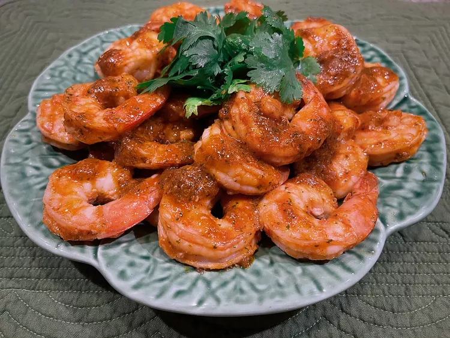

Chili garlic shrimp
Description
Try this slightly spicy chili garlic shrimp for dinner tonight. Honestly, the trickiest part of this dish is making the sauce, but you can easily make it early in the day and refrigerate. If you do, your dish will be done in a flash! Serve as an appetizer with toothpicks, or as a main dish with rice. Garnish with fresh cilantro, if desired.
Ingredients:
- 2 tablespoons chili garlic sauce
- 2 tablespoons hoisin sauce
- ⅓ cup shrimp stock (see Cook's Note)
- 1 tablespoon tomato paste
- 1 tablespoon mirin
- ¼ teaspoon sesame oil
- 2 teaspoons minced fresh ginger
- 1 clove garlic, minced
- 2 tablespoons chopped shallot
- 2 tablespoons chopped cilantro, plus more for garnish
- 3 tablespoons vegetable oil
- 1 clove garlic, sliced
- 1 (1/8-inch-thick) slice fresh ginger
- 1 pound raw shrimp, 21-25 shrimp per pound, shelled and deveined
Steps
- Step 1
Combine chili-garlic sauce, hoisin sauce, shrimp stock, tomato paste, mirin, sesame oil, 2 teaspoons minced fresh ginger, 1 clove minced garlic, shallot, and cilantro in a blender or small food processor. Pulse several times to chop, then purée, 30 to 45 seconds. Set sauce aside, or refrigerate until needed.
- Step 2
Heat oil in a large skillet or wok over medium high heat. When oil is hot, add garlic and ginger slices. Cook until browned, watching closely to avoid burning, about 2 minutes. Carefully remove garlic and ginger from the oil and discard.
- Step 3
To the seasoned oil, carefully add shrimp and cook until it just begins to turn pink and curl head to tail, about 2 minutes. Turn shrimp and add prepared sauce. Cook, stirring, until shrimp are bright pink on the outside and the meat is opaque, 2 to 3 minutes. An instant-read thermometer inserted into the center should read 145 degrees F (63 degrees C).
- Step 4
Remove shrimp from the skillet and keep warm. Continue cooking and stirring sauce until thickened and reduced to about 3/4 cup.
- Step 5
Pour thickened sauce over shrimp, and toss to cover.